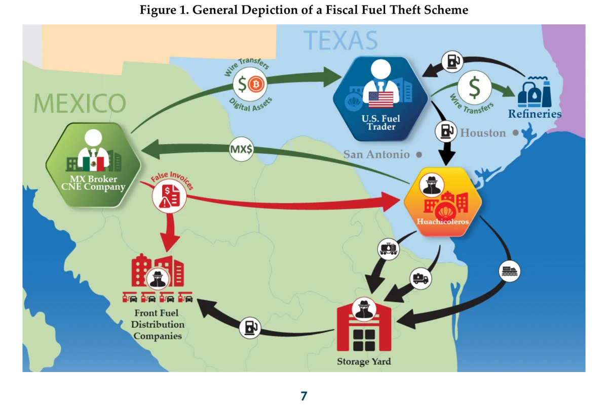
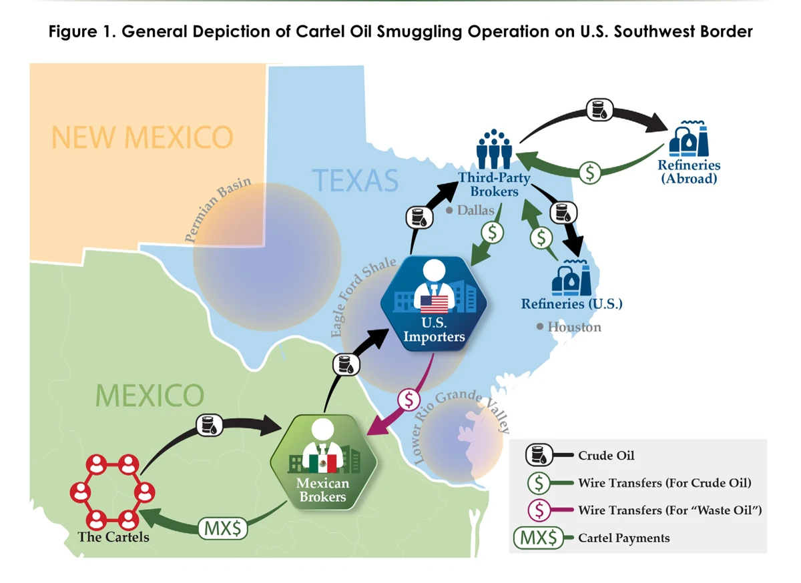

El tren que trae lo que no debería
La misma vía que el crimen saquea también la usa para traer lo que no debería. Según la Fiscalía, en apenas 52 días entraron por la aduana de Matamoros 144 millones de litros de combustible de contrabando, disfrazados en los permisos como solución de cloruro de calcio, y se distribuyeron por tren. En pesos, más de 3,000 millones. Y no lo dice solo México: el Tesoro de EE.UU. (FinCEN) documentó que la ruta se invirtió, que hasta un tercio del combustible vendido en México podría ser ilícito y que en 12 meses los bancos reportaron más de 7,000 millones de dólares en operaciones sospechosas. Con el concepto de Peter Andreas: el contrabando no se esconde del sistema, se disfraza de él.

La pieza anterior de este arco leyó el tren de carga como víctima: cómo se saquea. Hoy toca el reverso, sobre la misma vía. Porque el mismo corredor ferroviario que el crimen saquea es, al mismo tiempo, el que usa para traer lo que no debería. Una infraestructura, dos delitos en sentido opuesto.
El caso que lo destapó es el mayor de su tipo detectado en el país. De acuerdo con la Fiscalía General de la República, entre el 1 de junio y el 22 de julio de 2025, en apenas 52 días, ingresaron por la Aduana de Matamoros 144 millones 508 mil litros de diésel y gasolina, disfrazados en los permisos de importación como "solución de cloruro de calcio" . El combustible cruzó la frontera en ferrotanques y, ya en territorio nacional, se distribuyó por tren hacia Aguascalientes, Querétaro y San Luis Potosí . Son, de nuevo, los estados del corredor de carga.
Puesto en dinero, el tamaño asusta. A precios de referencia de Profeco, esos 144 millones de litros valen en el mercado más de 3 mil millones de pesos, y lo que dejó de recibir el fisco rondaría entre 1,500 y 1,800 millones (estimación propia, con método reproducible). En 52 días. Por una sola aduana.
Aquí ayuda ver con Peter Andreas. El contrabando, escribió, no es un mundo aparte del comercio legal: es su sombra, y usa sus mismos rieles y sus mismos papeles. El huachicol fiscal no es una toma clandestina escondida en el monte. Es lo contrario: entra a plena luz, con permiso de importación, con agente aduanal, con factura, solo que con la etiqueta cambiada. No se esconde del sistema: se disfraza de él. Por eso es tan difícil de ver, y por eso viaja en el tren de carga como cualquier embarque legítimo.
Y no es un caso aislado. El mismo mes, la propia Fiscalía aseguró otra red con 170 ferrotanques y casi 19 millones de litros en nueve estados . En el mercado, se estima que la importación ilegal de diésel llegó a rondar los 59 mil barriles diarios, cerca del 17 por ciento del consumo aparente del país . No es un boquete: es una tubería paralela, tendida sobre la red ferroviaria nacional.
El contrabando no se esconde del sistema: se disfraza de él.
Y no lo dice solo la Fiscalía mexicana. El 30 de junio de 2026, la unidad de inteligencia financiera del Departamento del Tesoro de Estados Unidos, FinCEN, emitió una alerta dedicada a este esquema, al que nombra en español: huachicol fiscal . Su hallazgo central es que la ruta se invirtió. Bajó el crudo robado que salía de México hacia Estados Unidos y subió la gasolina que entra de Estados Unidos a México sin pagar el IEPS. El Tesoro calcula que entre una cuarta parte y un tercio de todo el combustible que se vende en México podría ser ilícito, y que en apenas 12 meses los bancos le reportaron más de 7 mil millones de dólares en operaciones sospechosas ligadas al esquema . Describe la misma mecánica que la Fiscalía: el combustible entra por Tamaulipas, Nuevo León y Coahuila en camiones cisterna, en ferrotanques y en flotas marítimas fantasma, disfrazado en la aduana como residuos, lubricantes o aceites de desecho. Es la misma vía y el mismo disfraz, vistos desde el otro lado de la frontera.


Conviene no confundir los hoyos, porque son distintos. Petróleos Mexicanos reporta, en su informe anual a la bolsa de valores de Estados Unidos, pérdidas por 23 mil 491 millones de pesos en 2025 por robo a sus ductos . Ese es un agujero. El huachicol fiscal, el que viaja en tren, es otro, y no está contado ahí. Y sobre el total, el excomisionado de la Comisión Reguladora de Energía, Francisco Barnés de Castro, estima que las pérdidas reales rondarían al menos 123 mil millones de pesos, unas cinco veces lo que se reporta . Como en cada pieza de este arco, la cifra oficial vuelve a ser la más chica.
A mi juicio, y lo ofrezco como lectura, ese es el fondo del asunto: el mismo Estado que presume haber cerrado tomas en los ductos dejó abierta una compuerta mucho mayor en la aduana. El huachicol no bajó, se subió al tren, se puso el saco y la corbata de un embarque legal, y cruzó por la puerta principal. Mientras la vigilancia mire al monte, y no a los papeles del ferrotanque, la sombra seguirá viajando pegada al comercio que más presumimos.
Y esa puerta principal, la aduana, tiene un guardián con nombre y uniforme. De eso trata la siguiente pieza.
Pieza anterior del arco: «El robo que se llama vandalismo» Ver el expediente →
SRVO
Fuentes y referencias citadas
- Peter Andreas, Smuggler Nation: How Illicit Trade Made America (Oxford University Press, 2013). Ficha
- Caso de los 144 millones de litros por la Aduana de Matamoros (imputación de la FGR; presuntos responsables): Aristegui/Reforma · El Imparcial
- Otra red asegurada (170 ferrotanques, 9 estados): Excélsior
- La ruta invertida y la escala (una cuarta parte a un tercio del combustible ilícito; más de 7 mil millones de dólares en reportes sospechosos en 12 meses; combustible que entra en ferrotanques por Tamaulipas, Nuevo León y Coahuila): FinCEN, unidad financiera del Departamento del Tesoro de EE.UU., Supplemental Alert on Fuel Smuggling and Tax Evasion Schemes on the Southern Border (FIN-2026-Alert003, 30 de junio de 2026). FinCEN (PDF) · Treasury, sanciones a facilitadores del CJNG (30-jun-2026)
- Importación ilegal de diésel ~59 mil bpd (~17% del consumo aparente): La Silla Rota
- Pérdidas de PEMEX por robo a ductos, 23,491 mdp (informe 20-F a la SEC, 2025): El Financiero · Infobae
- Estimación de pérdidas reales ≥123,000 mdp, Francisco Barnés de Castro (excomisionado de la CRE), vía El Financiero.
- Precios de referencia del combustible: Profeco, "Quién es Quién en los Precios" (jul-2026). Profeco